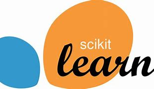
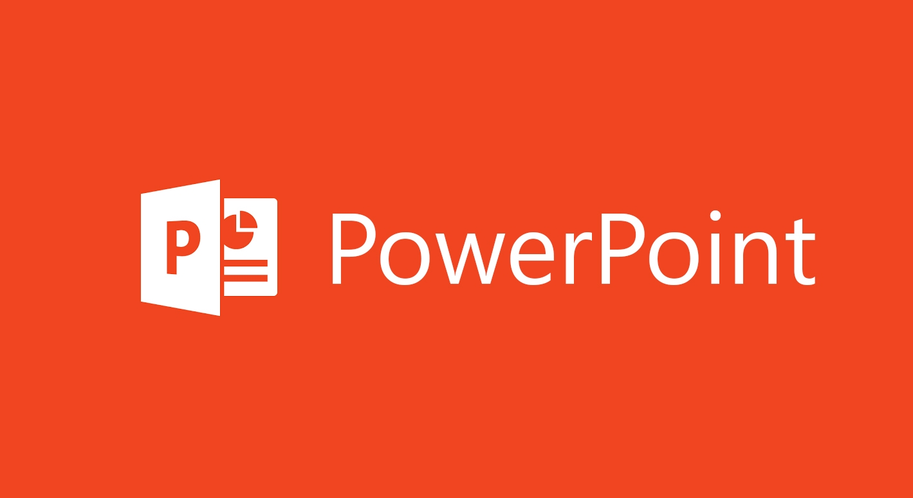
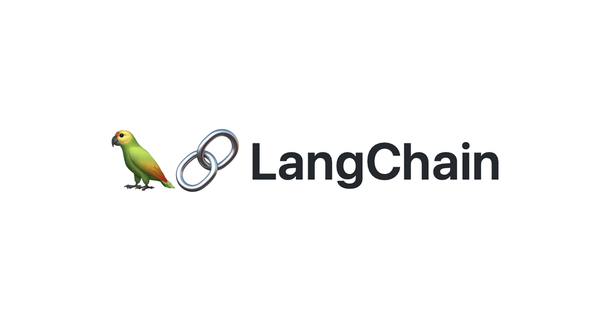
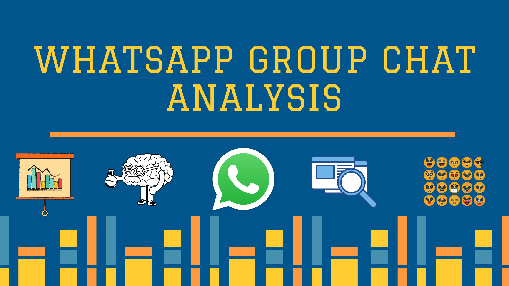
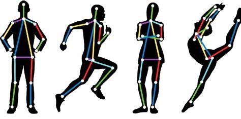

Skills

Python
SQL
Pandas
Numpy
Matplotlib
VS Code
Jupyter

Sci-Kit Learn
PyTorch
Excel
Azure

PowerPoint

LangChain

Data Science & Machine Learning Enthusiast
I’m Om Mane, currently pursuing my M.Tech in Artificial Intelligence at IIIT Pune. I have a strong passion for solving real-world problems using data-driven solutions and intelligent systems. My experience spans across machine learning, natural language processing, and deep learning, with hands-on exposure to tools like Python, TensorFlow, PyTorch, and Hugging Face Transformers. I’ve worked on impactful projects like hate speech detection using BERT and real-time chat analysis, along with scraping and structuring EV battery data from unorganized sources. I enjoy turning complex datasets into meaningful insights using SQL, Power BI, and other data visualization tools. I'm particularly drawn to applying AI in fintech, regulation tech, and social impact domains. Curious, collaborative, and constantly learning — I aim to contribute to innovative teams building the future with AI.
Education
Experience
Certifications



A real estate price prediction and recommendation system using data from 99acres.com, combining EDA, ML models, and personalized property suggestions.
View on GitHub
An AI-powered desktop assistant built with Python that uses NLP and machine learning to execute user commands, manage tasks, and boost productivity.
View on GitHub
The WhatsApp Chat Analyzer leverages NLP to extract insights from chats through message frequency, word frequency, and sentiment analysis.
View on GitHub
A Human Pose Estimation system using CNNs for real-time body movement tracking to enhance training in yoga and sports.
View on GitHub